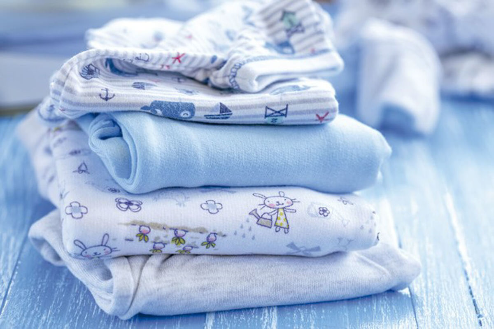
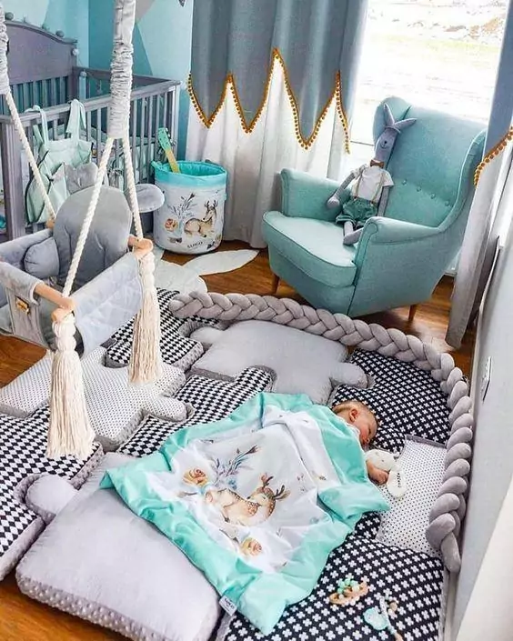
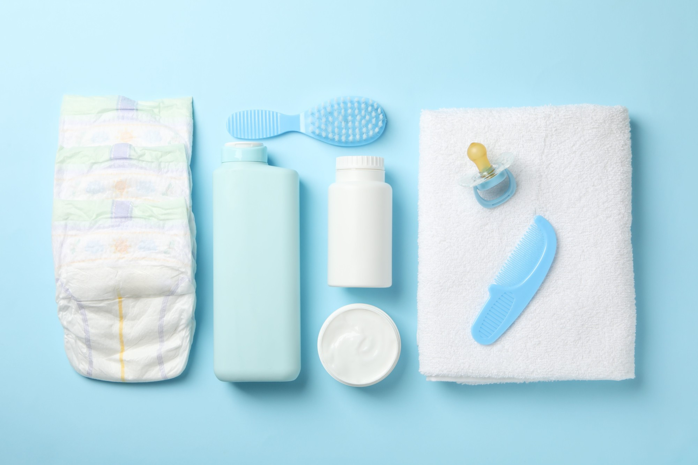

Dicas para Mamães de primeira viagem
Veja agora algumas dicas importantes para mães de primeira viagem.
Escolha as opções abaixo:
Enxoval do Bebê
Sugestão do enxoval do Bebê

- Bolsa tipo sacola de bebê
- 3 casacos de linha ou de lã, de acordo com a estação
- Body de manga curta e longa: 6 peças de cada tipo, tamanho RN ou PP e P
- Culote: 6 peças tamanho RN ou PP e P
- 2 macacões tamanho RN
- 4 macacões tamanho P
- 6 pares de meias
- 6 fraldas de pano (para tudo: boca, corpo, ombro etc.)
- 1 gorro
- 3 toalhas de banho
- 1 protetor de colchão
- 3 lençóis para berço
- 4 lençóis de baixo, preferencialmente de malha com elásticos
- 3 lençóis e 1 capa para o carrinho
- 3 mantas
Mobiliário
Sujestão de mobiliário:

- Berço que atenda os critérios de segurança (distância de 5 cm entre as ripas) com colchão firme
- Cômoda que pode servir também como trocador (utilizar almofada protetora); protetor de berço
- Poltrona para amamentar (não é necessária uma poltrona específica para a amamentação, o mais importante é que ela seja confortável, tenha a espuma do acento mais rígida e fique próxima da parede para o apoio da cabeça)
- Carrinho de passeio
- Bebê conforto
- Cadeira para transportar o bebê no carro
- Banheira (algumas também podem ser utilizadas como trocador)
- Babá eletrônica
Higiene e cuidados
Sugestões de Higiene e cuidados

- Dois antiassaduras (um para deixar no trocador e outro na malinha)
- Pote para algodão e hastes de algodão flexíveis
- Recipiente de água para troca de fraldas
- Garrafa térmica
- Lata de lixo com tampa
- Tesoura sem ponta (para cortar as unhas)
- Pente e escova
- Termômetro
- Bolsa de água quente
- Fraldas descartáveis: 3 pacotes, tipo RN para até 3,5 Kg
- Hastes de algodão flexíveis
- 2 pacotes de algodão
- Sabonete líquido neutro
- Conjunto para manicure: 1 conjunto com tesoura e lixa